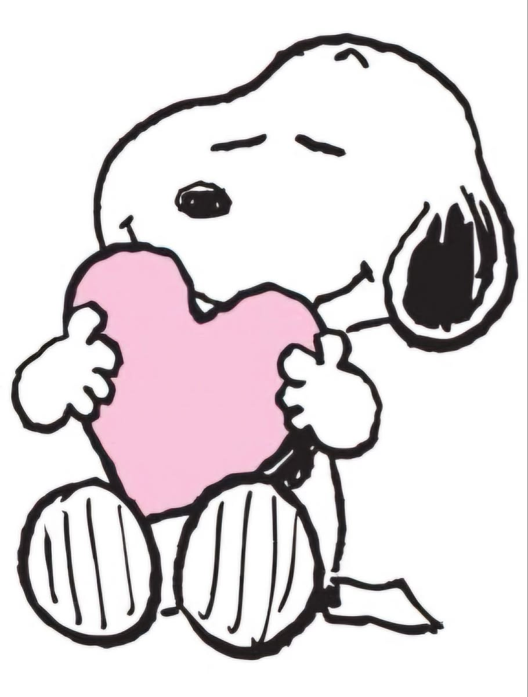
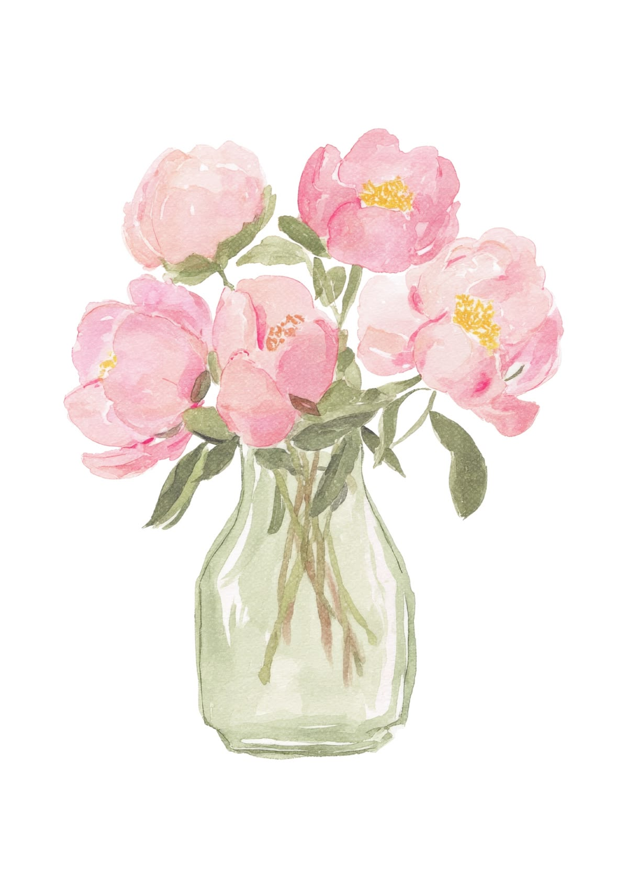
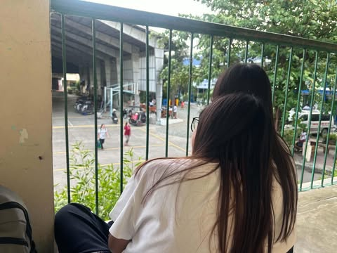

A little question for you ♡

Will you let me keep making you smile?
I have something special prepared for you. 💗
Choose wisely hehe ♡
A bouquet just for you
Flowers For My Babyyy 🌷

With love, always. 💗
Little things I notice
Things I Love About You ♡
There are so many things, but here are a few.

I could keep listing things, but I think I'd need a whole website just for that. ♡
A few words from me
A Letter for You ❤️
A few words about my intentions.
Dear Yanna Louise Pineda Patricio,
Hello! I made this website to let you know that my intentions toward you are sincere and serious. I know that I'm already courting you, and I would like to thank you for giving me the chance to do so. I genuinely appreciate the opportunity you've given me, and I don't take it for granted. I know that being given a chance to court someone doesn't mean that I am already guaranteed an answer, and I understand that earning someone's trust and affection takes time, patience, and sincerity.
I really appreciate you, and I sincerely want to get to know you better. I want to learn more about the person you are, the things that make you happy, the things you're passionate about, your dreams, your worries, and even the little things about you that other people might not notice. I want to understand you beyond what I already know and appreciate you for who you truly are. I don't want to rush anything or make you feel like you have to be someone else just to please me. I want you to feel comfortable being yourself around me.
I want to continue courting you sincerely, not because I expect something in return, but because I genuinely want to show you that my intentions are real. I know that words alone aren't enough to prove how sincere someone can be. Anyone can say beautiful things, make promises, or write a long letter, but what truly matters is how those words are reflected in their actions. That's why I want to show you through my actions, consistency, patience, and respect that I mean what I say.
I also understand that feelings cannot be forced or demanded. You have every right to take your time, think things through, and decide what you truly want. It's entirely up to you whether you're willing to reciprocate my feelings, and whatever your answer may be, I want you to know that I will respect it. If you feel the same way, I'll be genuinely happy to know that. But if you don't, I won't hold it against you, and there will be no hard feelings. I would never want you to say yes just because you feel bad for me, because you feel obligated to give me a chance, or because you're afraid of disappointing me. If you ever choose me, I want it to be because it's what you genuinely want, too.
I don't expect you to give me an answer right away, and I won't pressure you into making a decision before you're ready. I'm not asking you to promise me anything, nor am I expecting you to figure out your feelings just because I've expressed mine. I simply want the opportunity to continue getting to know you, to make you feel appreciated, and to let you see the sincerity behind my intentions. I know that courtship isn't about convincing someone through words alone. It's also about showing respect, understanding boundaries, and being willing to accept whatever the other person feels.
I know that I'm not perfect, and I won't pretend to be someone who has everything figured out. There are things I can still learn, ways I can improve, and moments when I might not always know the right thing to say or do. But I want you to know that I'm willing to learn and grow. I want to become someone who can treat you with the respect and consideration you deserve, someone who listens when you speak, understands when you need space, and appreciates even the smallest moments we get to share. I don't want to make promises that I cannot guarantee. Instead, I want to do my best to be consistent and let time show you the kind of person I am.
More than anything, I hope that this whole process allows us to understand each other better. I hope that you never feel like you have to change who you are just to be liked by me. You deserve to be appreciated for your genuine self. I want you to feel that your thoughts, feelings, comfort, and decisions matter. I want this to be something that brings you happiness and not something that becomes a burden or an obligation.
I made this website because I wanted to do something a little more meaningful than simply telling you how I feel through an ordinary message. I wanted to put some thought and effort into expressing my intentions and letting you know that I appreciate the chance you've given me. Maybe this isn't the grandest gesture, and maybe I won't always find the perfect words to express everything I feel, but I hope that the effort behind it shows you that this genuinely matters to me.
Whatever happens from here, I hope you continue to choose what makes you happy and what feels right for you. I hope you never feel that you have to sacrifice your peace of mind or your own happiness just to meet someone else's expectations, including mine. Your happiness matters, and I want you to be honest with yourself about what you feel and what you want. You don't owe me a particular answer just because I've taken the time to write this or because I've chosen to court you.
Thank you for taking the time to read this and for giving me the opportunity to express myself. Thank you for the chance to get to know you better, and thank you for simply being the person you are. I may not know what the future holds, and I can't predict where this journey will lead us, but I know that I want to approach it with sincerity, patience, and respect.
I'll continue doing my best to show you my intentions, not through this letter alone, but through the way I treat you and the way I respect your feelings and decisions. I'll let things happen naturally, at a pace that feels comfortable for both of us, because I believe that something genuine should never have to be forced.
No matter what your answer is, I sincerely hope that you'll be happy and stay true to yourself. And if you'll allow me to continue this journey of getting to know you, I'll be grateful for the chance to show you that my intentions are as sincere as I say they are.
Take your time, be honest with yourself, and always remember that your feelings matter, too. ❤️
Sincerely,
Mary Antonette Perez Laureta
A little playlist for you
Songs That Remind Me of You 🎧
Two songs, and a little explanation why.
01 · FIRST DEDICATION
anything 4 u
LANY
I dedicate this song to you because I want you to know how much I appreciate you. I'm genuinely thankful that I got the chance to know you, and I hope I can continue showing you how sincere my intentions are.
02 · SECOND DEDICATION
Out Of My League
LANY
When I first got to know you, I honestly thought someone like you would be out of my league. I never expected that I'd even get the chance to court you. I'm so grateful that I got this opportunity, and I hope you know how much it means to me.